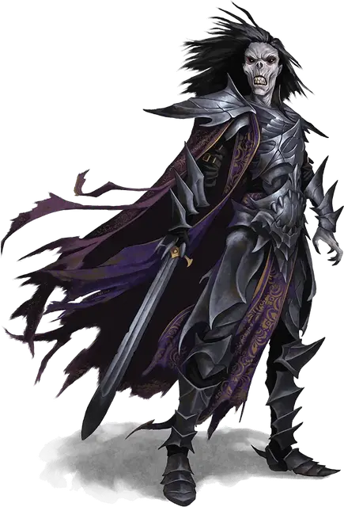

Нэйргот лорд Клинков
Naergoth Bladelord
Средняя Нежить, нейтрально-злая

Класс Доспеха 18 (латы)
Хиты 135 (18к8 + 54)
Скорость 30 футов
| мод | спас | ||
|---|---|---|---|
| СИЛ | 20 | +5 | +5 |
| ЛОВ | 12 | +1 | +5 |
| ТЕЛ | 16 | +3 | +3 |
| мод | спас | ||
|---|---|---|---|
| ИНТ | 12 | +1 | +1 |
| МДР | 14 | +2 | +6 |
| ХАР | 16 | +3 | +3 |
Навыки Восприятие +6, Скрытность +5
Сопротивление урону некротическая энергия; дробящий, колющий, рубящий от немагических атак, кроме нанесённых посеребрённым оружием
Иммунитет к урону яд
Иммунитет к состояниям отравление, истощение
Чувства тёмное зрение 60 футов, пассивное Восприятие 16
Языки Общий, Драконий
Опасность 11 (7200 опыта)
Бонус мастерства +4
Особенности
Чувствительность к солнечному свету. . Находясь на солнечном свету, Нэйргот получает помеху на броски атак и проверки Мудрости (Восприятие), которые основываются на зрении.
Действия
Мультиатака. . Нэйргот совершает три атаки длинным мечом или две атаки из длинного лука. Он может использовать свое Вытягивание жизни вместо одной из атак длинным мечом.
Вытягивание жизни. . Рукопашная атака оружием: +9 к попаданию, досягаемость 5 футов, одна цель. Попадание: 20 (5к6+3) урона некротической энергией. Цель должна преуспеть в спасброске Телосложения Сл 15 или её максимум хитов уменьшается на величину нанесённого урона. Это уменьшение заканчивается после продолжительного отдыха у цели. Цель умирает, если этот эффект уменьшает её максимум хитов до 0.
Гуманоид, убитый этой атакой, оживает под контролем Нэйргота как зомби [zombie] после 24 часов, если только его не вернули к жизни или его тело уничтожено. Нэйргот способен контролировать одновременно не больше двенадцати зомби [zombie].
Длинный меч. . Рукопашная атака оружием: +9 к попаданию, досягаемость 5 футов, одна цель. Попадание: 9 (1к8+5) рубящего урона или 10 (1к10+5) рубящего урона, если используется двумя руками.
Длинный Лук. . Дальнобойная атака оружием: +5 к попаданию, дистанция 150/600 футов, одна цель. Попадание: 5 (1к8+1) колющего урона плюс 10 (3к6) урона некротической энергией.